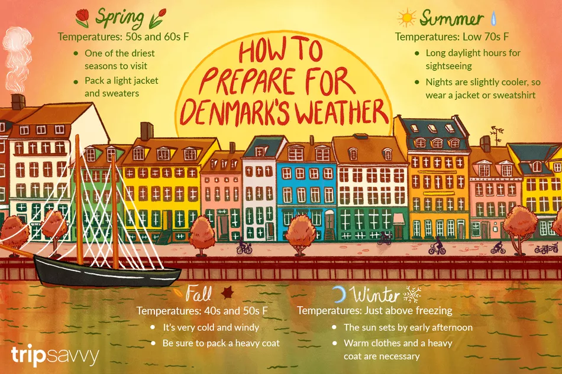

Climă
- Climatul este temperat.
- Iernile sunt blânde, având temperaturi medii în jur de 0,5 °C.
- Verile sunt răcoroase, cu medii de 16 °C.
- Vântul suflă foarte des, fiind mai puternic pe timpul iernii și mai slab vara.
- Danemarca are, în medie, 170 de zile ploioase pe an, cele mai puternice ploi apărând în lunile septembrie, octombrie și noiembrie.
